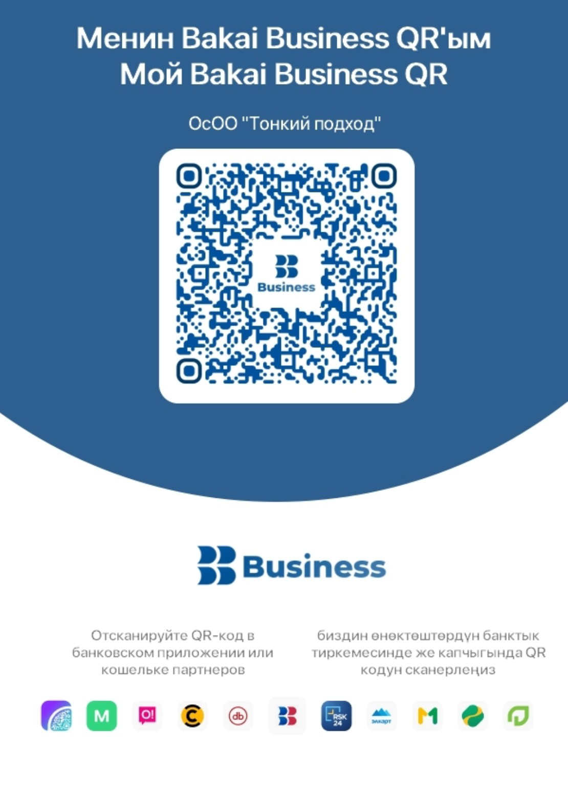

Открой тайны своего сердца
30 вопросов, знаки зодиака и символическое персональное предсказание по твоим ответам
18+ · Развлекательный формат · 399 сом за полный PDF
Твой символический портрет
Полные 30 тайн
Персональная книга с интерпретацией всех ответов, зодиакальными иллюстрациями и совместимостью.
Заказ
Оплата: 399 сом. Получатель: ОсОО «Тонкий подход».

ОАО «Бакай Банк» · БИК: 124029
Счёт KGS: 1240020002739042
Укажите номер заказа в назначении платежа, если банк позволяет. Администратор проверит фактическое поступление средств.
Сообщить администратору в WhatsAppСообщение или скриншот не подтверждают оплату. PDF выдаётся только после проверки поступления денег.
Условия и конфиденциальность
«30 тайн судьбы» — развлекательный художественный отчёт, не научное предсказание. Цена — 399 KGS, без подписки. Для выполнения заказа сохраняются имя, номер WhatsApp и ответы на вопросы. Администратор вручную проверяет поступление оплаты, после чего передаёт PDF в WhatsApp. Автоматическая отправка доступна только после подключения официального API.
Перед коммерческим запуском владелец должен добавить юридический адрес, контакты для обращений, сроки хранения и удаления данных, правила возвратов и действующую публичную оферту.